Пассивные фильтры
Основное назначение фильтра состоит в том, чтобы исключить прохождение сигналов определенного диапазона частот и в то же время обеспечить передачу сигналов другого диапазона частот. Фильтры делятся на активные и пассивные. Активные фильтры представляют собой частотно-избирательный усилительный каскад. К пассивным фильтрам относятся RC- и LC-фильтры. Фильтры также можно классифицировать исходя из диапазона частот, которые они пропускают или подавляют. Существуют четыре типа фильтров:
- Фильтр нижних частот, который пропускает все сигналы с частотой ниже некоторого заданного значения и подавляет сигналы более высоких частот.
- Фильтр верхних частот, который пропускает все сигналы с частотой выше некоторого заданного значения и подавляет сигналы более низких частот.
- Полосно-заграждающий фильтр (режекторный), который используется для подавления сигналов определенного диапазона частот, тогда как сигналы с частотами выше и ниже этого диапазона проходят беспрепятственно.
- Полосно-пропускающий фильтр (полосовой), который пропускает сигналы заданной полосы частот и препятствует прохождению сигналов любых других частот.
RС-фильтры
RС-фильтр высоких частот
Схема RC-фильтра верхних (высоких) частот и его амплитудно-частотная характеристика показаны на рис. 1.
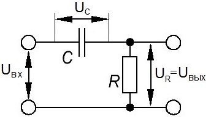
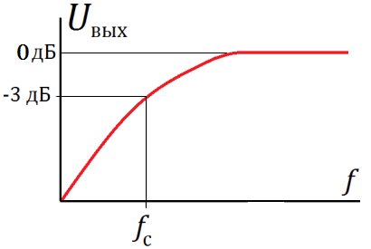
Рис. 1 - Схема и амплитудно-частотная характеристика высокочастотного CR-фильтра.
В этой схеме входное напряжение прикладывается и к резистору, и к конденсатору. Выходное же напряжение снимается с сопротивления. При уменьшении частоты сигнала возрастает реактивное сопротивление конденсатора, а следовательно, и полное сопротивление цепи. Поскольку входное напряжение остается постоянным, то ток, протекающий через цепь уменьшается. Таким образом, снижается и ток через активное сопротивление, что приводит к уменьшению падения напряжения на нем.
Фильтр характеризуется затуханием, выраженным в децибелах, которое он обеспечивает на заданной частоте. RC-фильтры рассчитываются таким образом, чтобы на выбранной частоте среза коэффициент передачи снижался приблизительно на 3 дБ (т.е. составлял 0,707 входного значения сигнала). Частота среза фильтра по уровню - 3 дБ определяется по формуле:
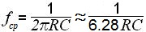
RС-фильтр низких частот
Фильтр низких частот имеет аналогичную структуру, только емкость и сопротивление там меняются местами. Амплитудно-частотную характеристику такого фильтра можно представить как зеркальное отображение АЧХ предыдущего.
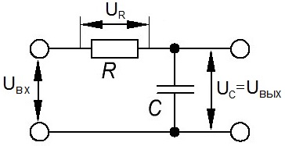
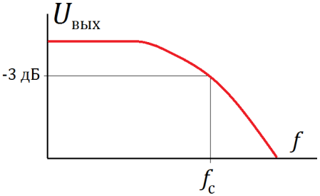
Рис. 2 - Схема и амплитудно-частотная характеристика низкочастотного RC-фильтра.
В этой цепи входное
напряжение также прикладывается и к
резистору, и к конденсатору, но выходное
напряжение снимается с конденсатора.
При увеличении частоты сигнала реактивное
сопротивление конденсатора, а
следовательно, и полное сопротивление
уменьшаются. Однако, поскольку это
полное сопротивление состоит из
реактивного и фиксированного активного
сопротивлений, его значение уменьшается
не так быстро, как реактивное сопротивление.
Следовательно, при увеличении частоты
снижение реактивного сопротивления (относительно полного сопротивления) приводит к уменьшению выходного напряжения. Частота среза этого фильтра по уровню
Рассмотренные выше фильтры представляют собой RC-цепи, которые характеризуются тремя параметрами, а именно: активным, реактивным и полным сопротивлениями. Обеспечиваемая этими RC-фильтрами величина затухания зависит от отношения активного или реактивного сопротивления к полному сопротивлению.
При расчете любого RC-фильтра можно задать номинал либо резистора, либо конденсатора и вычислить значение другого элемента фильтра на заданной частоте среза. При практических расчетах обычно задают номинал сопротивления, поскольку он выбирается на основании других требований. Например, сопротивление фильтра является его выходным или входным полным сопротивлением.
Полосовой RC-фильтр
Соединяя фильтры верхних и нижних частот, можно создать полосовой RC-фильтр, схема и амплитудно-частотная характеристика которого приведены на рис. 3.
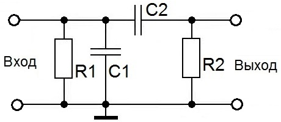
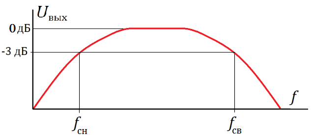
Рис. 3 - Схема и АЧХ полосового RC-фильтра.
На схеме рис. 2. R1 - полное входное сопротивление; R2 - полное выходное сопротивление, а частоты низкочастотного и высокочастотного срезов определяются по формулам:
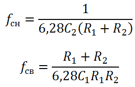
Следует отметить, что значение верхней частоты среза (fсв) должно быть по крайней мере быть в 10 раз больше нижней частоты среза (fсн), поскольку только в этом случае полосно-пропускающий фильтр будет работать достаточно эффективно.
Многозвенные RC-фильтры
Одиночный RC-фильтр не может обеспечить достаточного подавления сигналов вне заданного диапазона частот, поэтому для формирования более крутой переходной области довольно часто используют многозвенные фильтры (рис. 4, 5). Частота среза многозвенного фильтра определяется по формуле ВЧ, НЧ RC-фильтра. Добавление каждого звена приводит к увеличению затухания на заданной частоте среза примерно на 6 дБ.
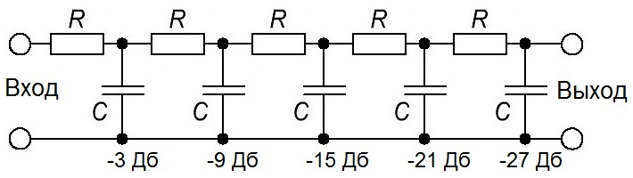
Рис. 4 - Многозвенный высокочастотный фильтр
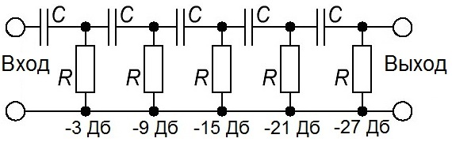
Рис. 5 - Многозвенный низкочастотный фильтр
LC-фильтры
Фильтры более высокого качества реализуются на основе катушек индуктивности и конденсаторов. В LC-фильтр могут входить также и резисторы. Связь входной и выходной цепей большинства LC-фильтров соответственно с источником сигнала и с нагрузкой производится таким образом, чтобы значения их реактивных или полных сопротивлений были равны.
Г-образный LC-фильтр нижних частот
На рис. 6 приведена схема типового Г-образного LC-фильтра нижних частот.
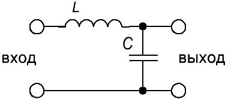
Рис. 6 - Схема Г-образного низкочастотного LC-фильтра
Расчет такого фильтра производится по следующим формулам:
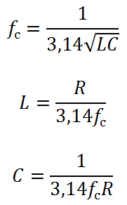
Все LC-фильтры обладают тем преимуществом, что на переменном токе конденсаторы и катушки индуктивности работают взаимообратно, т.е. при увеличении частоты сигнала индуктивное сопротивление возрастает, а емкостное падает. Таким образом, в LC-фильтре нижних частот реактивное сопротивление параллельного элемента при увеличении частоты сигнала уменьшается и этот элемент шунтирует высокочастотные сигналы. На низких частотах реактивное сопротивление параллельного элемента достаточно высокое. Последовательный элемент обеспечивает прохождение низкочастотных сигналов, а для сигналов высоких частот его реактивное сопротивление велико.
Т-образный LC-фильтр нижних частот
Простой Г-образный фильтр не обеспечивает достаточную крутизну амплитудно-частотной характеристики. Для увеличения крутизны в основную Г-образную структуру вводят дополнительную катушку индуктивности, как показано на рис. 7. Такой фильтр называется Т-образным.
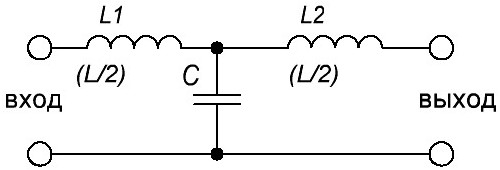
Рис. 7 - Т-образный НЧ LC-фильтр.
В Т-образном фильтре значение конденсатора С такое же, как и в исходной Г-образной структуре, и все ее расчетные формулы сохраняются. Суммарная индуктивность катушек L1 и L2 должна быть эквивалентна индуктивности единственной катушки исходной Г-образной структуры. Обычно требуемая общая индуктивность распределяется между двумя этими катушками поровну таким образом, чтобы каждая из катушек в Т-образном фильтре нижних частот имела индуктивность в два раза меньше, чем катушка в Г-образном фильтре.
П-образный LC-фильтр нижних частот
Крутизну амплитудно-частотной характеристики можно увеличить также путем введения в цепь дополнительного конденсатора. Такой фильтр называется П-образным (рис. 8).
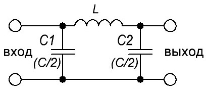
Рис. 8 - П-образный низкочастотный LC-фильтр.
В П-образном фильтре значение индуктивности L такое же, как и в исходной Г-образной структуре, тогда как суммарная емкость конденсаторов С1 и С2 должна быть эквивалентна емкости конденсатора исходной Г-образной структуры. Обычно требуемая общая емкость распределяется между двумя этими конденсаторами поровну таким образом, чтобы каждый из конденсаторов в П-образном фильтре имел емкость, равную половине емкости конденсатора в Г-образном фильтре.
Г-образный LС-фильтр верхних частот
На рис. 9 приведена схема типового Г-образного LС-фильтра верхних частот.
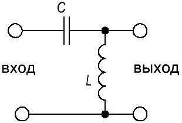
Рис. 9. Схема Г-образного высокочастотного LC-фильтра.
Расчет Г-образного LС-фильтра верхних частот производится по следующим формулам:
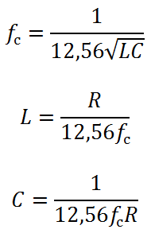
В этом фильтре при увеличении частоты сопротивление последовательного элемента уменьшается. Он пропускает высокочастотные сигналы, а для сигналов низких частот его реактивное сопротивление велико. Параллельный элемент оказывает шунтирующее влияние на сигналы низких частот, а для высокочастотных сигналов его реактивное сопротивление велико.
Т-образный LС-фильтр верхних частот
Для увеличения крутизны амплитудно-частотной характеристики в Г-образную структуру можно ввести дополнительный конденсатор, как показано на рис. 10.
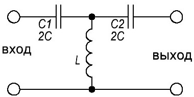
Рис. 10 - Т-образный высокочастотный LC-фильтр
Такой фильтр имеет Т-образную структуру. В Т-образном фильтре значение индуктивности L не отличается от ее значения в исходной Г-образной структуре и все расчетные формулы остаются такими же. Суммарная емкость конденсаторов С1 и С2 должна быть эквивалентна емкости одиночного конденсатора исходной Г-образной структуры. Обычно эта требуемая общая емкость распределяется поровну между двумя конденсаторами так, что Т-образном фильтре верхних частот каждый конденсатор имеет емкость, равную удвоенному значению емкости в Г-образной структуре.
П-образный LС-фильтр верхних частот
Крутизну амплитудно-частотной характеристики фильтра можно также повысить путем введения в схему дополнительной катушки индуктивности, как показано на рис. 11, образуя П-образный фильтр.
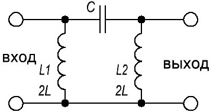
Рис. 11 - П-образный высокочастотный LC-фильтр
В П-образном LC-фильтре значение емкости конденсатора не изменяется, а суммарная индуктивность катушек L1 и L2 должна быть эквивалентна индуктивности одиночной катушки исходной Г-образной структуры. Обычно требуемая общая индуктивность распределяется поровну между двумя катушками так, что каждая из них имеет индуктивность, равную удвоенному значению индуктивности Г-образной структуры.
Г-образный режекторный LС-фильтр
Работа полосно-заграждающего (режекторного) фильтра основана на различии зависимостей полных сопротивлений параллельной и последовательной резонансных цепей от частоты. Полное сопротивление параллельной LC-цепи на резонансной частоте максимально, тогда как у последовательной цепи оно минимально. Эти две LC-цепи, соединенные определенным образом (рис. 12), образуют Г-образный режекторный фильтр.
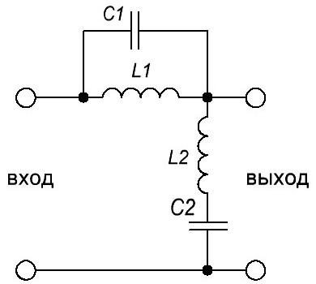
Рис. 12 - Г-образный режекторный LC-фильтр
На центральной частоте требуемого диапазона полное сопротивление последовательной LC-цепи (она включена параллельно нагрузке) минимально, и она оказывает шунтирующее воздействие и ослабляет сигналы. Полное сопротивление параллельной LC-цепи (которая включена последовательно с нагрузкой) на центральной частоте требуемого диапазона максимально, и она препятствует прохождению сигналов.
Полосно-пропускающие LC-фильтры
Т-образные и П-образные полосно-пропускающие фильтры (рис. 13) обладают более высокой крутизной амплитудно-частотной характеристики.
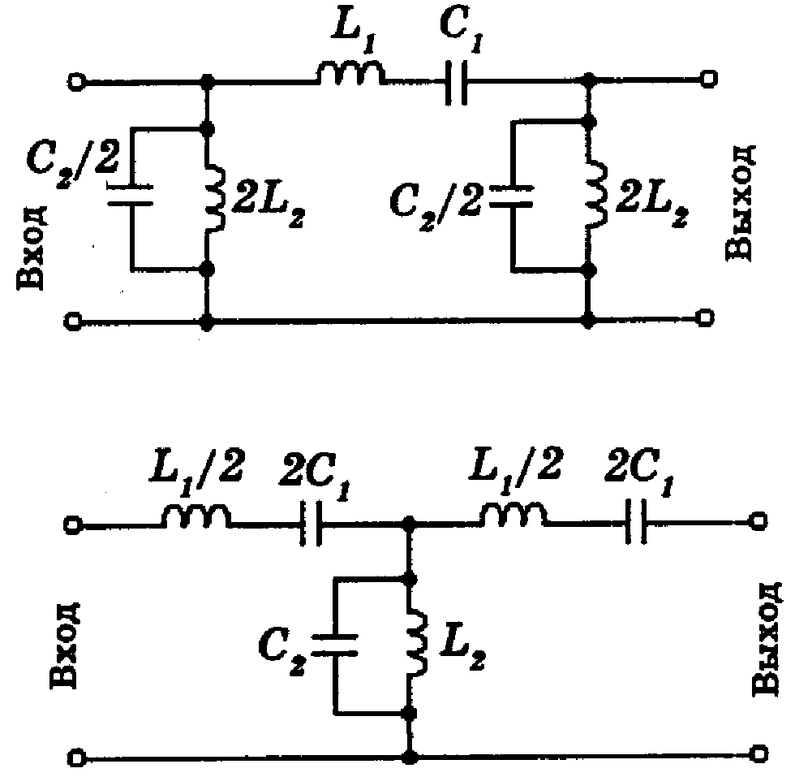
Рис.13 - Полосовые П- и Т-образные LC–фильтры
Расчет полосно-пропускающих LC-фильтров производится по следующим формулам:
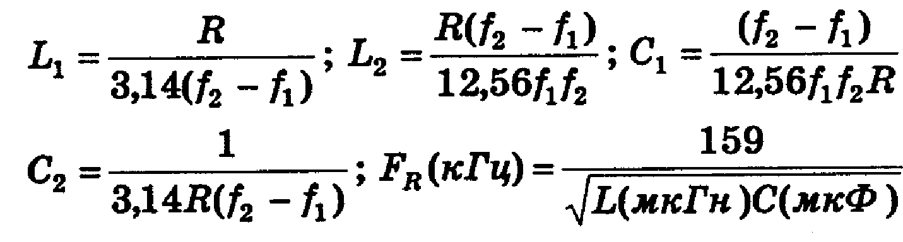